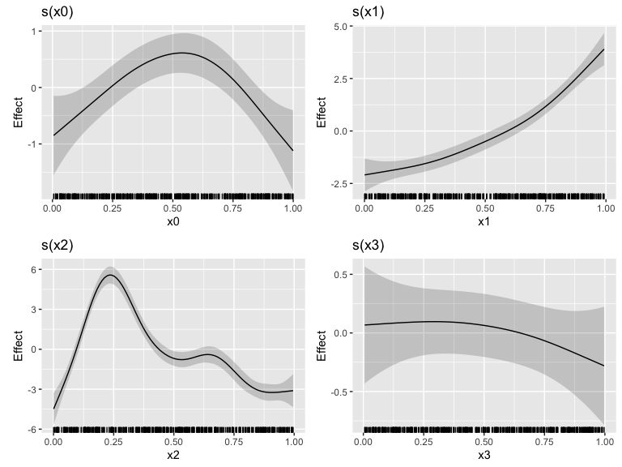
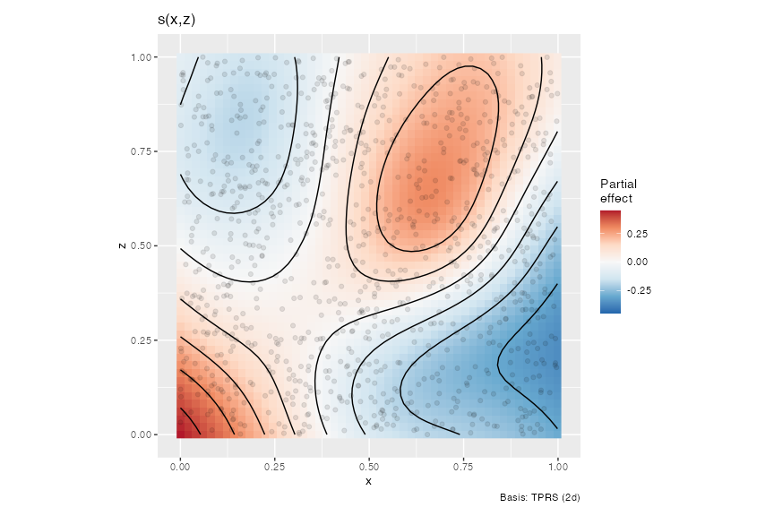
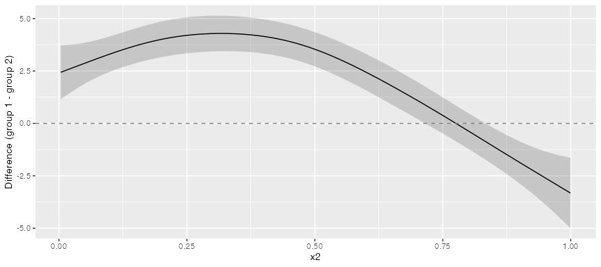
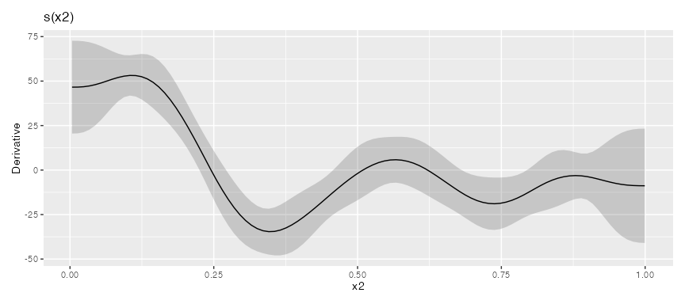
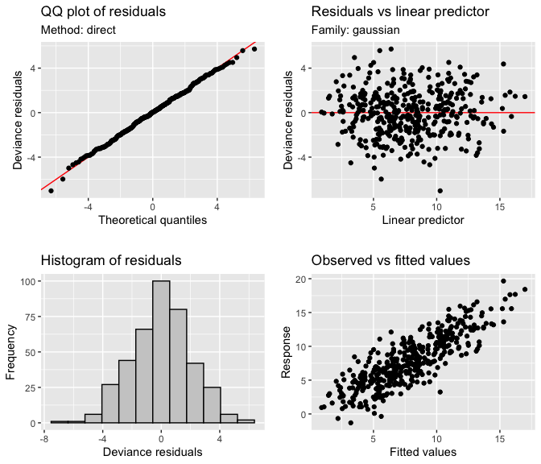
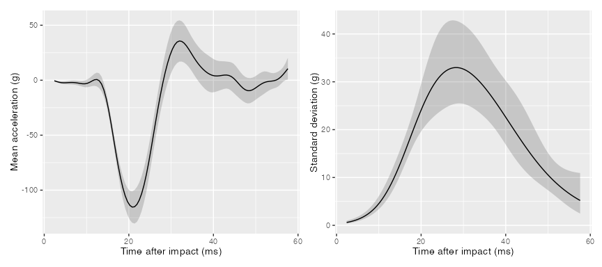
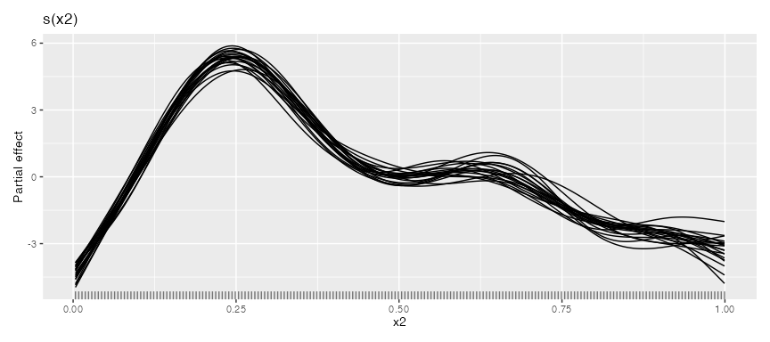

Overview
Working with GAMs and models containing penalised spline terms within the ‘tidyverse’ can be tedious and even difficult without a good understanding of these models themselves and how the model is returned by mgcv or other packages, and what the model objects contain. gratia is designed to help with this.
gratia provides ggplot-based graphics and utility functions for working with generalized additive models (GAMs) fitted using the mgcv package, via a reimplementation of the plot() method for GAMs that mgcv provides, as well as tidyverse compatible representations of estimated smooths. Additionally, gratia supports several related packages that allow mgcv’s smooths to be included in their models:
- GJRM,
- glmmTMB,
- gamm4,
- scam,
- sdmTMB
Citation
If you use gratia in your work, please cite the package using:
Simpson, G. L., (2024). gratia: An R package for exploring generalized additive models. Journal of Open Source Software, 9(104), 6962, https://doi.org/10.21105/joss.06962
Features
-
Visualise model effects. Plot smooths, parametric effects and interactions with
draw(), including surfaces and effects that vary between groups. Customise individual plots or complete figures using native ggplot2 themes. For example, draw the smooths and partial residuals from a GAM:
Or plot a smooth surface:

-
Understand how effects and predictions change. Estimate derivatives, compare smooths, contrast fitted responses between groups, and calculate accumulated local effects. Work with transformed covariates while displaying effects on their original scales. Here,
conditional_differences()compares fitted responses for two groups across a covariate:
-
Quantify uncertainty across smooths. Calculate pointwise and simultaneous intervals for smooths, derivatives, differences and predictions. For example, estimate how quickly a smooth changes with
derivatives()and draw its derivative with a 95% simultaneous interval:
-
Check models with diagnostics suited to their response distributions. Use
appraise()for an overview of model fit, or draw individual diagnostic plots. Check a wide range of response distributions, including categorical and censored responses, using appropriate residuals and posterior predictive checks. Plots designed for large datasets keep diagnostic displays readable while using all observations.
-
Explore the fitted response distribution. Estimate and plot response means, variances and other distribution summaries, with uncertainty. These tools also work with models where several distribution parameters depend on covariates. Here,
conditional_moments()shows how mean acceleration and its standard deviation vary with time in the motorcycle impact data:
-
Simulate from fitted models. Generate coefficient, smooth, derivative, fitted-response and predictive draws from approximate posterior distributions. Multiple chains, sampling diagnostics, and integration with posterior, coda and bayesplot support more extensive posterior exploration. For example,
smooth_samples()generates possible smooth curves:
Use familiar tools across more model classes. Explore shape-constrained models from scam and
mgcv::scasm(), as well as models from GJRM, gamm4, glmmTMB and sdmTMB. See the articles on SCAM, glmmTMB and sdmTMB for the operations supported by these model classes.
Installing gratia
gratia is now available on CRAN, and can be installed with
install.packages("gratia")however gratia is under active development and you may wish to install the development version from github. The easiest way to do this is via the binary packages of the development version that are provided by rOpenSci’s R Universe service:
# Install gratia in R
install.packages(
"gratia",
repos = c(
"https://gavinsimpson.r-universe.dev",
"https://cloud.r-project.org"
)
)Alternatively, install from source using the install_github() function from package remotes. Make sure you have remotes installed, then run
remotes::install_github("gavinsimpson/gratia")to install the package.
History
gratia grew out of an earlier package, schoenberg, itself a development of the earlier package tsgam, which was originally intended to be used with GAMs fitted to time series. As I was developing tsgam however it became clear that the package could be used more generally and that the name “tsgam” was no longer appropriate. To avoid breaking blog posts I had written using tsgam I decided to copy the git repo and all the history to a new repo for the package under the name schoenberg. At a later date someone released another package called schoenberg to CRAN, so that scuppered that idea. Now I’m calling the package gratia. Hopefully I won’t have to change it again…
Why gratia?
In naming his greta package, Nick Golding observed the recent phenomena of naming statistical modelling software, such as Stan or Edward, after individuals that played a prominent role in the development of the field. This lead Nick to name his Tensor Flow-based package greta after Grete Hermann.
In the same spirit, gratia is named in recognition of the contributions of Grace Wahba, who did pioneering work on the penalised spline models that are at the foundation of the way GAMs are estimated in mgcv. I wanted to name the package grace, to explicitly recognise Grace’s contributions, but unfortunately there was already a package named Grace on CRAN. So I looked elsewhere for inspiration.
The English word “grace” derives from the Latin gratia, meaning “favour, charm, thanks” (according to Merriam Webster).
The chair that Grace Wahba currently holds is named after Isaac J Schoenberg, a former University Madison-Wisconsin Professor of Mathematics, who in a 1946 paper provided the first mathematical reference to “splines”. (Hence the previous name for the package.)